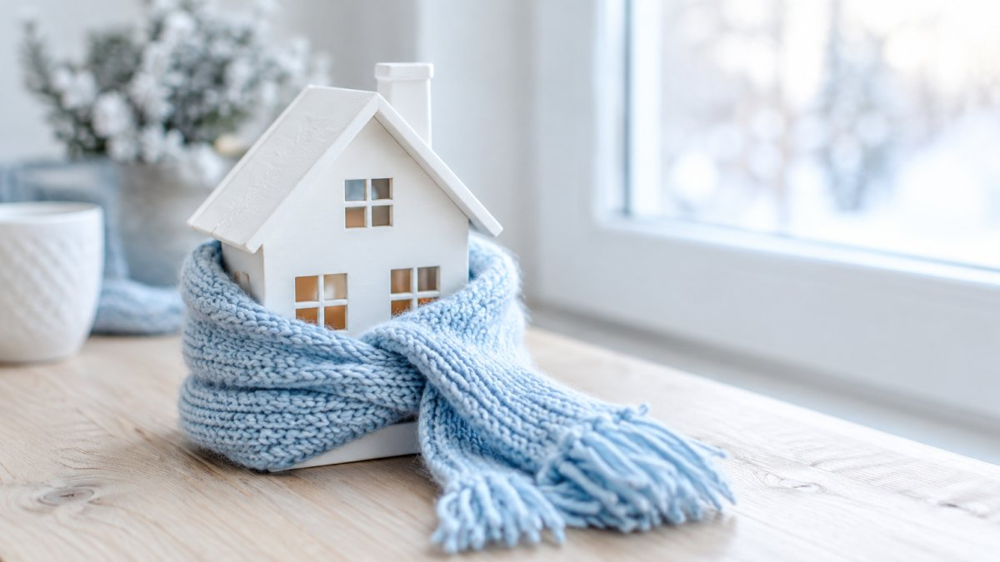

Spouwmuurisolatie
We vullen de spouw tussen uw binnen- en buitenmuur. Zo verliest u veel minder warmte via de muren, zonder verbouwing en meestal binnen een dag.
Gratis subsidiecheck
Bereken in 1 minuut uw subsidie op isolatie
Vier korte vragen. Direct een indicatie van uw ISDE-subsidie. Gratis en vrijblijvend.
Wat is spouwmuurisolatie?
Veel huizen hebben een spouwmuur: twee muren met een luchtlaag ertussen. Via die luchtlaag verdwijnt veel warmte naar buiten. Bij spouwmuurisolatie boren we kleine gaatjes in de voegen van de buitenmuur en vullen we de spouw met isolatiemateriaal. Daarna maken we de gaatjes weer netjes dicht in de kleur van uw voegwerk.
De voordelen
- Lagere stookkosten
- Een warmer huis in de winter, een koeler huis in de zomer
- Geen rommel of verbouwing binnen
- Meestal binnen één dag klaar
- Vaak een van de voordeligste isolatiemaatregelen
Welk materiaal gebruiken we?
Dat hangt af van de breedte van de spouw en de staat van uw muren. Veelgebruikte materialen zijn minerale wol (glaswol of steenwol), EPS-parels en PUR-schuim. Tijdens het adviesgesprek bekijken we wat het beste bij uw woning past.
Is mijn woning geschikt?
Huizen die zijn gebouwd tussen ongeveer 1920 en 1975 hebben vaak een spouw zonder isolatie. Tijdens het adviesgesprek controleren we of de spouw breed genoeg en schoon is, en of de muren in goede staat zijn. Vóór de uitvoering doen we ook een natuurcheck op vleermuizen en vogels, zoals de wet dat vraagt.
Subsidie
Voor spouwmuurisolatie (vanaf 10 m²) kunt u als huiseigenaar subsidie krijgen via de ISDE: een vast bedrag per vierkante meter. Laat u binnen 24 maanden twee of meer isolatiemaatregelen uitvoeren, dan verdubbelt dat bedrag. Meer over subsidie.

Veelgestelde vragen
Hoe lang duurt spouwmuurisolatie?
Bij de meeste woningen zijn we binnen één dag klaar.
Moet ik thuis zijn?
Het werk gebeurt van buitenaf. We vragen wel of u bij aanvang en oplevering thuis bent, zodat we samen alles kunnen doorlopen.
Wat kost spouwmuurisolatie?
Dat hangt af van het aantal vierkante meters, het materiaal en hoe goed de muren bereikbaar zijn. U krijgt na het adviesgesprek een heldere offerte. Lees ook ons artikel over de kosten van spouwmuurisolatie.
Krijg ik last van vocht?
Bij een goed onderzochte en gezonde spouw niet. Daarom controleren we de spouw en de muren vooraf.
Gratis adviesgesprek bij u thuis
Bel ons elke dag van 08:00 tot 20:00, of stuur een WhatsApp. Dat kan 24/7.